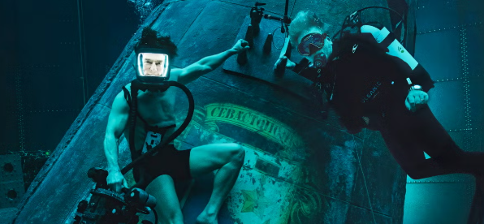
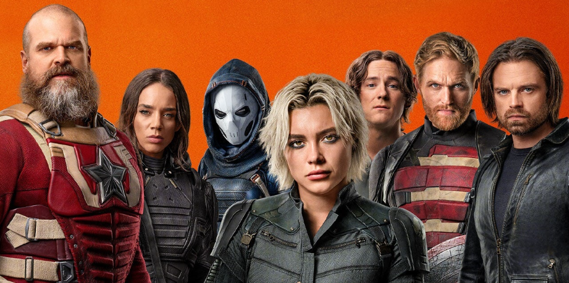
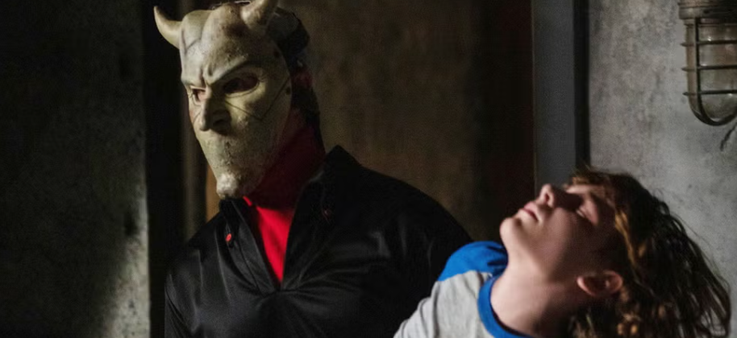

NOVEDADES
'Misión imposible: Sentencia final' es el fin del cine de acción tal y
como lo conocemos

El estreno en cines de 'Misión: Imposible - Sentencia final' (Christopher McQuarrie, 2025)
es una celebración, un homenaje y un regalo para todo aquel que esté dispuesto a disfrutar
del cine espectáculo a lo grande, pero el nostálgico velo de despedida que destila nos
obliga a ponernos serios en mitad de la fiesta para preguntarnos, ¿será la última? A la
anunciada despedida de la saga que nos ha regalado algunas de las mejores películas de Tom
Cruise, se suma una sensación de fin de ciclo más general, una impresión de la que es
difícil escapar si se comparan las últimas aventuras de Ethan Hunt con la obligada evolución
sufrida por el cine más adrenalítico en las recientes décadas.
Una descarada fiesta de exvillanos a la que no han invitado a los Vengadores

A la hora de entrar a una sala de cine, dejar en la puerta la mochila de las expectativas es
tan necesario como complejo. En el caso de los estrenos del ya pantagruélico Universo
Cinematográfico Marvel la cosa se complica todavía más. Uno debería poder disfrutar de
'Thunderbolts*', la traslación a pantalla grande de uno de los grupos de divertidos
antihéroes que pueblan las viñetas marvelitas, como si fuese una nueva grapa con la que
echar la tarde. El número de producciones ayuda, hablamos de la decimotercera entrega de la
llamada 'Saga del Multiverso' y de la trigésimo tercera desde que todo comenzase con 'Iron
Man' (Jon Favreau, 2008), pero la necesidad de que cada título se entienda como un tomo de
lujo nos obliga a juzgar (en exceso) las bondades y errores de un producto creado para
complacer necesidades fugaces y completistas.
El thriller de Netflix que te costará sacarte de la cabeza

Después de dirigir la que es, según la ciencia, la película más terrorífica de la historia del
cine, Scott Derrickson abandonó la marvelita 'Doctor Strange en el Multiverso de la Locura' por
diferencias creativas, presumiblemente por no poder incluir todo el terror que deseaba, y se
desquitó con una película de secuestros infantiles protagonizada por un villano enmascarado
interpretado por Ethan Hawke y basada en un relato de Joe Hill, hijísimo del rey del terror
Stephen King. Tras triunfar en cines de todo el mundo y dar luz verde a una secuela en la que
The Grabber, erigido como un nuevo icono del cine de terror, seguirá aterrorizando a niños desde
el más allá al más puro estilo Freddy Krueger, 'Black Phone' ha llegado al catálogo de películas
de Netflix como una de sus propuestas de género más populares. Y no es para menos.
Ana de Armas: "Keanu Reeves nunca habla de dolor. Este hombre no sé de qué está
hecho"
La invitación para conversar con Ana de Armas (La Habana, Cuba, 1988) en Los Ángeles viene
cargada. Su último trabajo tiene algo de culpa, protagonista de 'From the World of John Wick:
Ballerina', o simplemente, 'Ballerina'. Una entrega, dirigida por el californiano Len Wiseman
—responsable de la saga 'Underworld'— que transcurre entre la tercera y la cuarta parte de esta
violenta saga hasta ahora protagonizada por Keanu Reeves.
One Piece' (Netflix) temporada 2: fecha de estreno, reparto, argumento,
tráiler, imágenes y más
'One Piece' llegó y arrasó en Netflix. El live-action que ha roto la maldición de los
live-action de anime llegó con su primera temporada de 8 capítulos para presentarnos a los
primeros personajes protagonistas de la tripulación de Luffy, el futuro Rey de los Piratas.
Adaptación en acción real del célebre manga de Eiichiro Oda, 'One Piece' lleva más de mil
capítulos tanto en manga como en anime, por lo que hay mucho, muchísimo, más allá de a dónde ha
llegado esta serie de Netflix. Solo el éxito de audiencia podrá decidir si esta serie, de unos
reportados 17 millones de dólares por episodio, continúa año tras año. Por ahora, la primera
temporada ha sido un éxito de crítica y público así que podemos tener confianza en la larga vida
de esta ficción. De hecho, el anime original ha desembarcado en Netflix con el arco de
'Egghead', en el capítulo 1089 del anime nada menos. Netflix, además, hará su propio remake del
anime de 'One Piece', así que habrá con qué entretenernos hasta la llegada de la nueva
temporada.
"Un thriller sobrenatural lleno de misterio": La película española con actores
de Hollywood
 En un panorama cinematográfico dominado por franquicias y fórmulas cada vez más repetitivas es
refrescante encontrar una obra que no solo se atreva a plantear preguntas incómodas, sino que
además lo haga desde un enfoque más profundo sin renunciar al entretenimiento. En este contexto,
Rodrigo Cortés, uno de los directores españoles más interesantes de los últimos años, firmó en
2012 una de las mejores películas de suspense e intriga de Max, una obra que nos desafía desde
su primera escena hasta su impactante desenlace: 'Luces Rojas'.
En un panorama cinematográfico dominado por franquicias y fórmulas cada vez más repetitivas es
refrescante encontrar una obra que no solo se atreva a plantear preguntas incómodas, sino que
además lo haga desde un enfoque más profundo sin renunciar al entretenimiento. En este contexto,
Rodrigo Cortés, uno de los directores españoles más interesantes de los últimos años, firmó en
2012 una de las mejores películas de suspense e intriga de Max, una obra que nos desafía desde
su primera escena hasta su impactante desenlace: 'Luces Rojas'.
En un panorama cinematográfico dominado por franquicias y fórmulas cada vez más repetitivas es
refrescante encontrar una obra que no solo se atreva a plantear preguntas incómodas, sino que
además lo haga desde un enfoque más profundo sin renunciar al entretenimiento. En este contexto,
Rodrigo Cortés, uno de los directores españoles más interesantes de los últimos años, firmó en
2012 una de las mejores películas de suspense e intriga de Max, una obra que nos desafía desde
su primera escena hasta su impactante desenlace: 'Luces Rojas'.